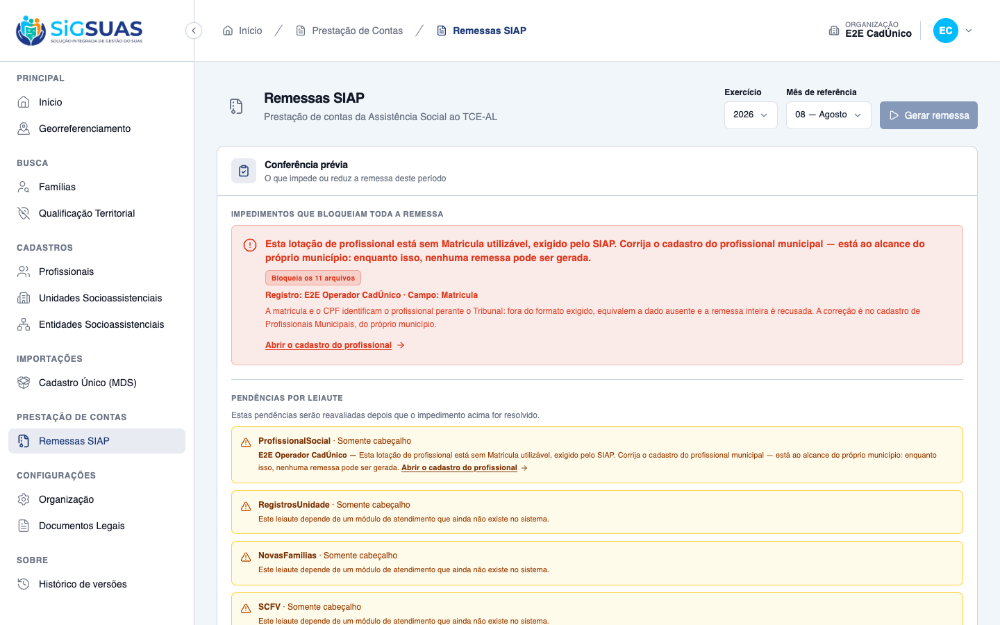
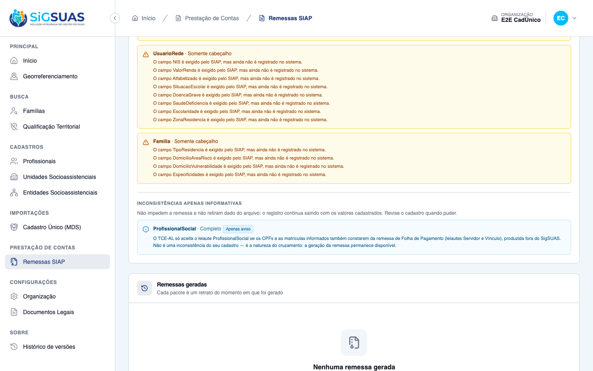

Relatório de Critérios de Aceite — HU #10529 (US-SIAP-07)
LGPD (RN12) — este dossiê é diferente de todos os anteriores do épico: o leiaute carrega dado pessoal (CPF e nome de servidores, por exigência do Manual). Por isso: (1) todos os cenários usam dados fabricados — CPFs válidos porém fictícios e nomes inventados, nunca cópia de base real; (2) todo CPF e nome foi mascarado nos artefatos antes de tocar o disco — CPF como 390.***.***-05 e nome como Maria S. L., preservando o formato; (3) o mascaramento é no artefato, não na geração — o sistema não muda de comportamento para o dossiê, e o Pest prova os formatos reais (CPF com 11 dígitos); (4) os payloads da conferência não precisam de máscara por desenho — a RN15 os mantém sem PII, e o CA13 é exatamente essa prova. Conferido arquivo a arquivo (varredura automática de CPFs e nomes na gravação e na montagem deste relatório).
Resumo
17 critérios da spec avaliados (CA01–CA13 com os desdobramentos CA05b, CA08b, CA08c e CA09b), mais a
proteção TOCTOU, a não-regressão dos cinco bloqueios anteriores e os textos pt-BR — todos atendidos,
nenhum reprovado. Esta é a primeira HU do épico que CONSTRÓI um leiaute: ProfissionalSocial
saía só com cabeçalho desde a #10367, porque o docblock dizia que a Matricula "não tem origem no
eSUAS". A razão caducou — ele examinava a tabela errada (social_professionals, cuja matrícula virou
mds_number em 17/06); a matrícula real vive em tenant_professionals.registration_number
desde 22/06 (D02/D03).
É também o único leiaute do épico que carrega dado pessoal (RN12) — e por isso este dossiê tem uma regra que os anteriores não tinham: mascaramento obrigatório (ver quadro LGPD acima). E é o primeiro leiaute a sair de "nunca bloqueia" para "bloqueia": depois desta HU, uma única matrícula alfanumérica trava a remessa inteira do município — mas, pela primeira vez desde a #10371, a recusa aponta um cadastro que o próprio município corrige (Profissionais Municipais), sem depender do Super Admin.
As duas informativas fecham as duas pontas soltas. A da Folha de Pagamento (CA09/D07) transforma em aviso o motivo que mantinha o leiaute desligado — o aceite no Tribunal depende de uma remessa que o eSUAS não produz (regras 1310/1312) — sem impedir a geração. A do cadastro paralelo (CA12/D06) acaba com a omissão silenciosa de quem só existe em INV-050: a conferência passa a dizer quantos ficam de fora, nunca quem (RN13/RN15).
Suíte anexa: 222 testes Pest (1216 asserções) em --filter=Siap, todos verdes; 3375
testes na suíte cheia (26 skips pré-existentes), 0 falhas. As consultas §8.1–§8.3 rodaram em base local
não representativa (vazia) — as duas perguntas de dimensionamento seguem para staging, ver seção §8.
| CA | Critério | Status |
|---|---|---|
| CA01 | Profissionais lotados no leiaute (happy path) | ATENDIDO · automatizado |
| CA02 | Profissional lotado em duas unidades gera duas linhas | ATENDIDO · automatizado |
| CA03–CA05b | As quatro bordas do mês de referência (RN05/D08) | ATENDIDO · automatizado |
| CA06 | Profissional inativado depois do mês de referência consta (RN06/D09) | ATENDIDO · automatizado |
| CA07 | Profissional sem lotação não consta — e não é pendência (RN09) | ATENDIDO · automatizado |
| CA08 | Bloqueio por profissional sem matrícula | ATENDIDO · automatizado |
| CA08b | Matrícula fora do formato bloqueia — e NUNCA é sanitizada nem truncada (D04/D05) | ATENDIDO · automatizado |
| CA08c | Bloqueio por CPF ausente ou inválido (D04) | ATENDIDO · automatizado |
| CA09 | Aviso sobre a remessa de Folha de Pagamento (D07/RN08) | ATENDIDO · automatizado |
| CA09b | Sem linhas, sem aviso | ATENDIDO · automatizado |
| CA10 | Município sem profissional lotado — leiaute em branco (RN11) | ATENDIDO · automatizado |
| CA11 | Isolamento entre municípios (RN14) | ATENDIDO · automatizado |
| CA12 | Aviso sobre o cadastro paralelo (D06/RN13) | ATENDIDO · automatizado |
| CA13 | A pendência não carrega PII (RN15) — a evidência de primeira classe desta HU | ATENDIDO · automatizado |
| MENSAGENS | Os textos que o município lê (pt-BR) | ATENDIDO · automatizado |
| TOCTOU | O bloqueio é reavaliado dentro do job | ATENDIDO · automatizado |
| REGRESSÃO | Os cinco bloqueios anteriores e as informativas continuam como estavam | ATENDIDO · automatizado |
| §8 | Dimensionamento do impacto — consultas §8.1 a §8.3 da spec | EXECUTADO EM BASE NÃO REPRESENTATIVA |
| ACHADO 1 | O cartão de impedimento ainda não tem a redação própria de profissionais — o fallback cobre | FOLLOW-UP DE BAIXO RISCO (D10) |
| DÚVIDAS | As três dúvidas do artefato que seguem abertas | RISCO ABERTO · A DECIDIR COM O PO |
A captura original do cartão defeituoso foi preservada no arquivo CA08-recusa-da-geracao.png, porque o dossiê da conferência prévia a referencia como prova do "antes". A captura corrigida ficou em CA08-recusa-da-geracao-apos-correcao.png.
As três capturas foram refeitas contra a branch de integração. O ACHADO 1 deste dossiê registrava que o cartão de impedimento exibia a linha de resolução de outra pendência — mandava falar com o Master e ir aos parâmetros do Tribunal, quando a correção é no cadastro de Profissionais Municipais, ao alcance do próprio município. Era orientação errada ao operador, e foi classificado com severidade maior que a prevista.
Corrigido. O cartão agora diz: "A matrícula e o CPF identificam o profissional perante o Tribunal: fora do formato exigido, equivalem a dado ausente e a remessa inteira é recusada. A correção é no cadastro de Profissionais Municipais, do próprio município." — e o atalho é "Abrir o cadastro do profissional", apontando para a ficha correta. As duas pontas do defeito, texto e destino, foram endereçadas.
A conferência prévia também passou a identificar o registro pendente pelo nome, o que as capturas anteriores não mostravam — e é o que o CA08 pede ao exigir que a pendência identifique o profissional e a unidade de lotação.
Consequência para o tratamento de dado pessoal deste dossiê: como o cartão agora exibe o nome do sujeito, a captura do CA08 traz um nome de profissional em tela — o que o critério de mascaramento original proibia. O nome exibido é fabricado ("E2E Operador CadÚnico", usuário de teste do ambiente), não corresponde a pessoa alguma e nenhum CPF aparece em tela. O aviso da Folha de Pagamento continua sendo a única pendência do módulo sem sujeito, então a captura do CA09 permanece sem qualquer identificação.
CA01 — Profissionais lotados no leiaute (happy path) ATENDIDO · automatizado
Critério: Dado que o CRAS tem 5 profissionais com lotação vigente em agosto de 2026, todos com matrícula registrada
Quando a remessa da referência 08/2026 for gerada
Então o leiaute ProfissionalSocial traz 5 linhas
E cada linha apresenta CPF com 11 dígitos, nome completo, NumeroMDS e Matricula
Natureza da evidência: este critério fala do conteúdo do arquivo. A evidência de primeira classe é o próprio trecho do ProfissionalSocial.xml, extraído do zip de uma remessa realmente gerada pelo endpoint POST /api/client/siap-remittances — não montado à mão. Screenshot de XML aberto no navegador não acrescentaria nada.
Este é o único leiaute do épico que carrega dado pessoal (RN12) — CPF e nome de servidor, por exigência do Manual (item 15.5). Por isso o artefato abaixo está mascarado: 390.***.***-05 no lugar do CPF e Maria S. L. no lugar do nome, preservando o formato para o critério continuar legível. No arquivo real o CPF sai com 11 dígitos exatos — é o que o Pest prova (it brings every professional assigned in the reference month into the layout (CA01), regex <CPF>\d{11}</CPF> linha a linha). Os dados são fabricados: CPFs válidos porém fictícios, nomes inventados.
Resultado: 5 linhas, cada uma com os 4 campos do Manual (CPF, Nome, NumeroMDS, Matricula). A unidade precisa ser completa — desde a #10370, unidade sem MDS bloquearia a remessa e mascararia este critério. Junto das 5 linhas, a geração persiste a informativa fixa da Folha de Pagamento (CA09/D07) — zero pendência não-informativa.
<!-- HU #10529 — CA01 — CRAS Centro (MDS 1234567890123) com 5 lotacoes vigentes em 08/2026 = 5 linhas, cada uma com CPF, Nome, NumeroMDS e Matricula. -->
<!-- Remessa GERADA de verdade via POST /api/client/siap-remittances; XML extraido do zip. CPF e nome MASCARADOS no artefato (RN12/LGPD) — no arquivo real o CPF sai com 11 digitos, como o Pest prova (pest-10529.txt, CA01). Dados FABRICADOS. -->
<?xml version="1.0"?>
<SIAP>
<Codigo>004821</Codigo>
<Exercicio>2026</Exercicio>
<Mes>08</Mes>
<ProfissionalSocial>
<CPF>390.***.***-05</CPF>
<Nome>Maria S. L.</Nome>
<NumeroMDS>1234567890123</NumeroMDS>
<Matricula>1234567</Matricula>
</ProfissionalSocial>
<ProfissionalSocial>
<CPF>389.***.***-12</CPF>
<Nome>Joao P. N.</Nome>
<NumeroMDS>1234567890123</NumeroMDS>
<Matricula>2026001</Matricula>
</ProfissionalSocial>
<ProfissionalSocial>
<CPF>743.***.***-01</CPF>
<Nome>Ana C. B.</Nome>
<NumeroMDS>1234567890123</NumeroMDS>
<Matricula>2026002</Matricula>
</ProfissionalSocial>
<ProfissionalSocial>
<CPF>550.***.***-19</CPF>
<Nome>Carlos E. F.</Nome>
<NumeroMDS>1234567890123</NumeroMDS>
<Matricula>2026003</Matricula>
</ProfissionalSocial>
<ProfissionalSocial>
<CPF>697.***.***-20</CPF>
<Nome>Francisca A. C.</Nome>
<NumeroMDS>1234567890123</NumeroMDS>
<Matricula>2026004</Matricula>
</ProfissionalSocial>
</SIAP>Sem captura nesta versão do dossiê. A evidência primária deste critério está acima (XML/payload reais + Pest). As capturas de tela do ambiente real são anexadas na atualização seguinte do dossiê, por ordem operacional: o dossiê é commitado ANTES da fase de screenshots.
CA02 — Profissional lotado em duas unidades gera duas linhas ATENDIDO · automatizado
Critério: Dado que Maria tem lotação vigente em 08/2026 no CRAS e no CREAS
Quando a remessa for gerada
Então o leiaute traz duas linhas para Maria, com o MDS de cada unidade e a mesma matrícula
Uma linha por lotação (RN01), não por pessoa: a mesma profissional aparece duas vezes, com o NumeroMDS de cada unidade (1234567890123 e 9876543210987) e a mesma matrícula 1234567 — exatamente o exemplo do §9 da spec. Pest: it emits one line per unit for a professional assigned to two units (CA02).
<!-- HU #10529 — CA02 — a mesma profissional lotada no CRAS (MDS 1234567890123) e no CREAS (MDS 9876543210987): duas linhas, o MDS de cada unidade e a MESMA matricula 1234567. -->
<!-- Remessa gerada de verdade; XML extraido do zip. CPF e nome mascarados (RN12). Dados fabricados. -->
<?xml version="1.0"?>
<SIAP>
<Codigo>004821</Codigo>
<Exercicio>2026</Exercicio>
<Mes>08</Mes>
<ProfissionalSocial>
<CPF>390.***.***-05</CPF>
<Nome>Maria S. L.</Nome>
<NumeroMDS>1234567890123</NumeroMDS>
<Matricula>1234567</Matricula>
</ProfissionalSocial>
<ProfissionalSocial>
<CPF>390.***.***-05</CPF>
<Nome>Maria S. L.</Nome>
<NumeroMDS>9876543210987</NumeroMDS>
<Matricula>1234567</Matricula>
</ProfissionalSocial>
</SIAP>Sem captura nesta versão do dossiê. A evidência primária deste critério está acima (XML/payload reais + Pest). As capturas de tela do ambiente real são anexadas na atualização seguinte do dossiê, por ordem operacional: o dossiê é commitado ANTES da fase de screenshots.
CA03–CA05b — As quatro bordas do mês de referência (RN05/D08) ATENDIDO · automatizado
Critério: CA03: lotação iniciada em 20/08/2026 → consta · CA04: encerrada em 05/08/2026 → consta
CA05: encerrada em 30/06/2026 → NÃO consta · CA05b: iniciada em 02/09/2026 → NÃO consta
Vigência é sobreposição com o mês (D08): start_date <= último dia E (end_date IS NULL OU end_date >= primeiro dia). As quatro bordas numa única remessa de 08/2026: quem chegou dia 20 e quem saiu dia 05 trabalharam em agosto e constam (matrículas 111001 e 111002); quem saiu em junho e quem só chega em setembro ficam fora (222002/222003 ausentes do arquivo) — sem virar pendência: fora do período não é perda. Pest: CA03/CA04 e CA05/CA05b.
RN05 segue inferida (risco 3 da spec): o artefato pede confirmação ao TCE-AL se o Tribunal espera sobreposição ou a posição de um dia específico. Se for posição de um dia, CA03–CA05 mudam.
<!-- HU #10529 — CA03/CA04/CA05/CA05b — as QUATRO bordas da RN05 (sobreposicao com 08/2026) numa unica remessa: -->
<!-- entra matricula 111001 — lotacao INICIADA em 20/08/2026 (CA03) -->
<!-- entra matricula 111002 — lotacao ENCERRADA em 05/08/2026 (CA04) -->
<!-- fora matricula 222002 — encerrada em 30/06/2026, antes do mes (CA05) -->
<!-- fora matricula 222003 — iniciada em 02/09/2026, depois do mes (CA05b) -->
<!-- Remessa gerada de verdade; XML extraido do zip. CPF e nome mascarados (RN12). Dados fabricados. -->
<?xml version="1.0"?>
<SIAP>
<Codigo>004821</Codigo>
<Exercicio>2026</Exercicio>
<Mes>08</Mes>
<ProfissionalSocial>
<CPF>914.***.***-70</CPF>
<Nome>Antonio C. M.</Nome>
<NumeroMDS>1234567890123</NumeroMDS>
<Matricula>111001</Matricula>
</ProfissionalSocial>
<ProfissionalSocial>
<CPF>806.***.***-92</CPF>
<Nome>Josefa B. T.</Nome>
<NumeroMDS>1234567890123</NumeroMDS>
<Matricula>111002</Matricula>
</ProfissionalSocial>
</SIAP>Sem captura nesta versão do dossiê. A evidência primária deste critério está acima (XML/payload reais + Pest). As capturas de tela do ambiente real são anexadas na atualização seguinte do dossiê, por ordem operacional: o dossiê é commitado ANTES da fase de screenshots.
CA06 — Profissional inativado depois do mês de referência consta (RN06/D09) ATENDIDO · automatizado
Critério: Dado um profissional com lotação vigente em 08/2026, inativado no cadastro em 09/2026
Quando a remessa de 08/2026 for gerada em outubro de 2026
Então esse profissional consta do leiaute
Declara-se a equipe do período, não a de hoje: nem status, nem inactivated_at, nem blocked_at filtram a query. O XML traz a matrícula 333001 (inativada em 15/09) e a 333002 (bloqueada por inatividade em 20/09) — o teste cobre os dois status. A exceção é o soft delete (deleted_at), que filtra: registro excluído do cadastro não reaparece na prestação de contas (CA06b, it leaves a soft deleted professional out of the layout without a pendency).
<!-- HU #10529 — CA06 (RN06/D09) — remessa de 08/2026 gerada DEPOIS das inativacoes: matricula 333001 inativada no cadastro em 15/09/2026 e 333002 bloqueada por inatividade em 20/09/2026. As duas CONSTAM: declara-se a equipe DO PERIODO, nao a de hoje. -->
<!-- Remessa gerada de verdade; XML extraido do zip. CPF e nome mascarados (RN12). Dados fabricados. -->
<?xml version="1.0"?>
<SIAP>
<Codigo>004821</Codigo>
<Exercicio>2026</Exercicio>
<Mes>08</Mes>
<ProfissionalSocial>
<CPF>014.***.***-04</CPF>
<Nome>Genival C. L.</Nome>
<NumeroMDS>1234567890123</NumeroMDS>
<Matricula>333001</Matricula>
</ProfissionalSocial>
<ProfissionalSocial>
<CPF>052.***.***-15</CPF>
<Nome>Rosangela D. P.</Nome>
<NumeroMDS>1234567890123</NumeroMDS>
<Matricula>333002</Matricula>
</ProfissionalSocial>
</SIAP>Sem captura nesta versão do dossiê. A evidência primária deste critério está acima (XML/payload reais + Pest). As capturas de tela do ambiente real são anexadas na atualização seguinte do dossiê, por ordem operacional: o dossiê é commitado ANTES da fase de screenshots.
CA07 — Profissional sem lotação não consta — e não é pendência (RN09) ATENDIDO · automatizado
Critério: Dado um profissional cadastrado sem lotação em nenhuma unidade no período
Quando a remessa for gerada
Então ele não consta do leiaute
E isso não gera pendência
A query parte das lotações, então quem não tem lotação nunca é alcançado — 1 linha no arquivo (matrícula 555001), a 555002 ausente, e a única pendência persistida é a informativa fixa da Folha (que acompanha qualquer arquivo com linha). Nenhuma pendência cita a lotação inexistente.
<!-- HU #10529 — CA07 (RN09) — dois profissionais no cadastro, so um lotado: o arquivo traz 1 linha (matricula 555001). O de matricula 555002, sem lotacao, NAO consta — e isso nao e pendencia. -->
<!-- Remessa gerada de verdade; XML extraido do zip. CPF e nome mascarados (RN12). Dados fabricados. -->
<?xml version="1.0"?>
<SIAP>
<Codigo>004821</Codigo>
<Exercicio>2026</Exercicio>
<Mes>08</Mes>
<ProfissionalSocial>
<CPF>390.***.***-05</CPF>
<Nome>Maria S. L.</Nome>
<NumeroMDS>1234567890123</NumeroMDS>
<Matricula>555001</Matricula>
</ProfissionalSocial>
</SIAP>{
"_leitura": "CA07 — profissional cadastrado sem lotacao fica fora do arquivo SEM gerar pendencia: apos a geracao, a unica pendencia persistida e a informativa FIXA da Folha de Pagamento (CA09/D07), que acompanha qualquer arquivo com linha. Nenhuma pendencia cita a matricula 555002.",
"linhas_no_xml": 1,
"pendencias_persistidas": [
{
"message_key": "siap_remittance.pendency.payroll_cross_reference",
"scope": "informative",
"subject_uuid": null,
"field_name": null
},
{
"message_key": "siap_remittance.pendency.no_data_source",
"scope": "layout",
"subject_uuid": null,
"field_name": null
},
{
"message_key": "siap_remittance.pendency.no_data_source",
"scope": "layout",
"subject_uuid": null,
"field_name": null
},
{
"message_key": "siap_remittance.pendency.no_data_source",
"scope": "layout",
"subject_uuid": null,
"field_name": null
},
{
"message_key": "siap_remittance.pendency.no_data_source",
"scope": "layout",
"subject_uuid": null,
"field_name": null
},
{
"message_key": "siap_remittance.pendency.field_without_source",
"scope": "layout",
"subject_uuid": null,
"field_name": "NIS"
},
{
"message_key": "siap_remittance.pendency.field_without_source",
"scope": "layout",
"subject_uuid": null,
"field_name": "ValorRenda"
},
{
"message_key": "siap_remittance.pendency.field_without_source",
"scope": "layout",
"subject_uuid": null,
"field_name": "Alfabetizado"
},
{
"message_key": "siap_remittance.pendency.field_without_source",
"scope": "layout",
"subject_uuid": null,
"field_name": "SituacaoEscolar"
},
{
"message_key": "siap_remittance.pendency.field_without_source",
"scope": "layout",
"subject_uuid": null,
"field_name": "DoencaGrave"
},
{
"message_key": "siap_remittance.pendency.field_without_source",
"scope": "layout",
"subject_uuid": null,
"field_name": "SaudeDeficiencia"
},
{
"message_key": "siap_remittance.pendency.field_without_source",
"scope": "layout",
"subject_uuid": null,
"field_name": "Escolaridade"
},
{
"message_key": "siap_remittance.pendency.field_without_source",
"scope": "layout",
"subject_uuid": null,
"field_name": "ZonaResidencia"
},
{
"message_key": "siap_remittance.pendency.field_without_source",
"scope": "layout",
"subject_uuid": null,
"field_name": "TipoResidencia"
},
{
"message_key": "siap_remittance.pendency.field_without_source",
"scope": "layout",
"subject_uuid": null,
"field_name": "DomicilioAreaRisco"
},
{
"message_key": "siap_remittance.pendency.field_without_source",
"scope": "layout",
"subject_uuid": null,
"field_name": "DomicilioVulnerabilidade"
},
{
"message_key": "siap_remittance.pendency.field_without_source",
"scope": "layout",
"subject_uuid": null,
"field_name": "Especificidades"
}
],
"pendencias_nao_informativas": 16
}Sem captura nesta versão do dossiê. A evidência primária deste critério está acima (XML/payload reais + Pest). As capturas de tela do ambiente real são anexadas na atualização seguinte do dossiê, por ordem operacional: o dossiê é commitado ANTES da fase de screenshots.
CA08 — Bloqueio por profissional sem matrícula ATENDIDO · automatizado
Critério: Dado um profissional com lotação vigente e sem matrícula registrada
Quando eu solicitar a geração da remessa
Então a remessa não é gerada
E a conferência identifica a lotação e o campo Matricula
Primeiro leiaute do épico a sair de "nunca bloqueia" para "bloqueia" — e a primeira recusa que o município resolve sozinho: matrícula e CPF vivem no cadastro de Profissionais Municipais do próprio tenant (resolution: scope tenant, resource tenant-professionals), ao contrário dos lookups globais das #10372/#10373.
Resultado: 422 em tenant_professionals, e "a remessa não é gerada" literalmente: 0 remessas no banco, nenhum job despachado, nenhum arquivo no storage. A conferência identifica a lotação pelo subject_uuid e o campo Matricula — nas duas zonas (bloqueio + lista do leiaute), sem virar pendência nova. A mensagem conta lotações, não pendências (lotação sem matrícula E sem CPF = 1 cadastro a corrigir).
{
"_leitura": "CA08 — lotacao vigente com matricula vazia. O POST devolve 422 em tenant_professionals, siap_remittances fica em 0 linhas, nenhum job e despachado e nenhum arquivo e escrito: \"a remessa nao e gerada\", literalmente. A conferencia previa identifica a lotacao (subject_uuid) e o campo Matricula — ver CA13.",
"lotacao_uuid": "3ab11920-2c8a-401b-a238-3b2902af3948",
"http_status": 422,
"resposta_do_post": {
"message": "A remessa SIAP não pode ser gerada: 1 lotação de profissional está sem matrícula ou CPF no formato exigido pelo SIAP. Corrija o cadastro de Profissionais Municipais — veja quais dados faltam na conferência prévia.",
"errors": {
"tenant_professionals": [
"A remessa SIAP não pode ser gerada: 1 lotação de profissional está sem matrícula ou CPF no formato exigido pelo SIAP. Corrija o cadastro de Profissionais Municipais — veja quais dados faltam na conferência prévia."
]
}
},
"remessas_no_banco": 0,
"jobs_despachados": 0,
"arquivos_no_storage": 0
}

LGPD (RN12): as duas capturas foram conferidas visualmente antes do commit — nenhum CPF e nenhum nome de pessoa em tela; o cenário usa dados fabricados. Atenção à última linha do cartão vermelho: ela exibe a redação de resolução do CARDUG ("Somente o Master da organização pode informar este código…"), que contradiz a própria mensagem da pendência — ver o ACHADO 1, que deixou de ser o fallback genérico previsto e virou follow-up de correção no client/.
CA08b — Matrícula fora do formato bloqueia — e NUNCA é sanitizada nem truncada (D04/D05) ATENDIDO · automatizado
Critério: Dado um profissional com lotação vigente e matrícula "A-1234" (ou com mais de 16 dígitos)
Quando eu solicitar a geração da remessa
Então a remessa não é gerada
E o valor NÃO é sanitizado nem truncado
Para o Tribunal, matrícula ilegível equivale a matrícula ausente (D04) — a regra 1312 recusaria a linha de qualquer forma. E "consertar" o valor (str_numbers → 1234, ou truncar em 16) mandaria ao TCE-AL um número que não é a matrícula — exatamente o valor que a 1312 cruza com o leiaute Vinculo da Folha de Pagamento (D05).
A prova da não-transformação tem três pontas no payload: (1) o banco segue com o literal A-1234 depois da recusa; (2) o leiaute emitiu zero linha — nem com os dígitos extraídos, nem truncada; (3) a pendência bloqueante nomeia o campo Matricula. O Pest cobre também a variante com 17 dígitos (dataset "mais de 16 dígitos"). E o contraponto positivo: a matrícula válida 0012345 sai com o zero à esquerda — nenhum cast numérico a corrompe.
{
"_leitura": "CA08b (D04/D05) — matricula \"A-1234\" (fora do formato Numerico 16*). O POST devolve 422 e o valor NAO e sanitizado nem truncado: o banco segue com o literal \"A-1234\" depois da recusa, e o leiaute nao emitiu NENHUMA linha — nem com os digitos extraidos (\"1234\"), nem truncada. O Pest cobre tambem a variante com 17 digitos (dataset \"mais de 16 digitos\").",
"lotacao_uuid": "86ccbeb6-0adf-4bd3-88c4-5dce6bf7a5a2",
"http_status": 422,
"resposta_do_post": {
"message": "A remessa SIAP não pode ser gerada: 1 lotação de profissional está sem matrícula ou CPF no formato exigido pelo SIAP. Corrija o cadastro de Profissionais Municipais — veja quais dados faltam na conferência prévia.",
"errors": {
"tenant_professionals": [
"A remessa SIAP não pode ser gerada: 1 lotação de profissional está sem matrícula ou CPF no formato exigido pelo SIAP. Corrija o cadastro de Profissionais Municipais — veja quais dados faltam na conferência prévia."
]
}
},
"matricula_no_banco_apos_recusa": "A-1234",
"linhas_emitidas_pelo_leiaute": 0,
"lotacoes_puladas": 1,
"pendencia_bloqueante": {
"field_name": "Matricula",
"is_blocking": true
},
"remessas_no_banco": 0,
"jobs_despachados": 0
}<!-- HU #10529 — D05 — a matricula 0012345 sai COMO ESTA, com o zero a esquerda: nenhum cast numerico, nenhum str_numbers, nenhum truncamento. E este valor literal que a regra 1312 cruza com o leiaute Vinculo da Folha de Pagamento. -->
<!-- Remessa gerada de verdade; XML extraido do zip. CPF e nome mascarados (RN12). Dados fabricados. -->
<?xml version="1.0"?>
<SIAP>
<Codigo>004821</Codigo>
<Exercicio>2026</Exercicio>
<Mes>08</Mes>
<ProfissionalSocial>
<CPF>550.***.***-19</CPF>
<Nome>Carlos E. F.</Nome>
<NumeroMDS>1234567890123</NumeroMDS>
<Matricula>0012345</Matricula>
</ProfissionalSocial>
</SIAP>Sem captura nesta versão do dossiê. A evidência primária deste critério está acima (XML/payload reais + Pest). As capturas de tela do ambiente real são anexadas na atualização seguinte do dossiê, por ordem operacional: o dossiê é commitado ANTES da fase de screenshots.
CA08c — Bloqueio por CPF ausente ou inválido (D04) ATENDIDO · automatizado
Critério: Dado um profissional com lotação vigente cujo usuário está sem CPF
Quando eu solicitar a geração da remessa
Então a remessa não é gerada
E a conferência identifica a lotação e o campo CPF
users.cpf é nullable — e sem CPF a regra 1310 não tem como cruzar o servidor com o leiaute Servidor da Folha. Mesma recusa do CA08 (siap_professional_incomplete), pendência com field_name: CPF identificando a lotação pelo uuid. O Pest cobre também CPF com 10 dígitos (dataset "com 10 dígitos") — 11 exatos ou pendência.
{
"_leitura": "CA08c (D04) — lotacao vigente cujo usuario esta SEM CPF (users.cpf e nullable). O POST devolve 422 na mesma recusa do CA08; a conferencia identifica a lotacao e o campo CPF. O Pest cobre tambem a variante com 10 digitos (dataset \"com 10 digitos\").",
"lotacao_uuid": "d8da14e3-5968-4d0a-83b3-65d217ab9ee8",
"http_status": 422,
"resposta_do_post": {
"message": "A remessa SIAP não pode ser gerada: 1 lotação de profissional está sem matrícula ou CPF no formato exigido pelo SIAP. Corrija o cadastro de Profissionais Municipais — veja quais dados faltam na conferência prévia.",
"errors": {
"tenant_professionals": [
"A remessa SIAP não pode ser gerada: 1 lotação de profissional está sem matrícula ou CPF no formato exigido pelo SIAP. Corrija o cadastro de Profissionais Municipais — veja quais dados faltam na conferência prévia."
]
}
},
"campo_na_pendencia": "CPF",
"remessas_no_banco": 0
}Sem captura nesta versão do dossiê. A evidência primária deste critério está acima (XML/payload reais + Pest). As capturas de tela do ambiente real são anexadas na atualização seguinte do dossiê, por ordem operacional: o dossiê é commitado ANTES da fase de screenshots.
CA09 — Aviso sobre a remessa de Folha de Pagamento (D07/RN08) ATENDIDO · automatizado
Critério: Dado que o leiaute terá ao menos uma linha na referência
Quando eu solicitar a conferência prévia
Então é apresentada pendência informativa avisando que o TCE-AL só aceita este leiaute se os CPFs e as matrículas constarem da remessa de Folha de Pagamento
E a geração permanece disponível
A primeira pendência do módulo SEM sujeito: subject_uuid e subject_type nulos, porque é um aviso sobre a remessa, não sobre um registro. O motivo pelo qual o leiaute ficou desligado um ciclo inteiro — a regra 1312 cruzar com um arquivo que o eSUAS não produz — vira aviso: é condição de aceitação no Tribunal, não de geração. A mensagem diz explicitamente que não é uma inconsistência do cadastro do município, e can_generate permanece true; o leiaute não vira PARTIAL (outcome complete).
{
"_leitura": "CA09 (D07/RN08) — com ao menos uma linha, a conferencia apresenta a pendencia INFORMATIVA da Folha de Pagamento: scope informative, SEM subject_uuid e SEM subject_type (primeira pendencia do modulo sem sujeito — e um aviso sobre a remessa, nao sobre um registro). A geracao permanece disponivel (can_generate true) e o leiaute nao vira PARTIAL (outcome complete).",
"leiaute": {
"name": "ProfissionalSocial",
"sort_order": 5,
"file_name": "ProfissionalSocial.xml",
"outcome": "complete",
"record_count": 1,
"skipped_count": 0,
"pendencies": [
{
"scope": "informative",
"kind": "inconsistent_data",
"field_name": null,
"subject_type": null,
"subject_uuid": null,
"affected_count": 1,
"message_key": "siap_remittance.pendency.payroll_cross_reference",
"message": "O TCE-AL só aceita o leiaute ProfissionalSocial se os CPFs e as matrículas informados também constarem da remessa de Folha de Pagamento (leiautes Servidor e Vínculo), produzida fora do SigSUAS. Não é uma inconsistência do seu cadastro — é a natureza do cruzamento: a geração da remessa permanece disponível.",
"blocks_entire_remittance": false
}
]
},
"zona_bloqueio": {
"can_generate": true,
"pendencies": []
},
"summary": {
"layout_count": 11,
"record_count": 2,
"blocking_pendency_count": 0,
"informative_pendency_count": 1,
"layout_pendency_count": 16
}
}
LGPD (RN12): captura conferida visualmente antes do commit — nenhum CPF e nenhum nome de pessoa em tela; o cenário usa dados fabricados. A mesma captura evidencia o CA12 (o segundo parágrafo do cartão).
CA09b — Sem linhas, sem aviso ATENDIDO · automatizado
Critério: Dado que o leiaute não terá nenhuma linha na referência
Quando eu solicitar a conferência prévia
Então a informativa da Folha de Pagamento NÃO é apresentada
Sem linha não há o que cruzar: record_count 0, pendencies vazio. A informativa é condicionada a recordCount > 0 — aviso fixo não é aviso incondicional.
{
"_leitura": "CA09b — o leiaute nao tera nenhuma linha (profissional cadastrado, mas sem lotacao): a informativa da Folha de Pagamento NAO aparece. record_count 0, pendencies vazio.",
"leiaute": {
"name": "ProfissionalSocial",
"sort_order": 5,
"file_name": "ProfissionalSocial.xml",
"outcome": "header_only",
"record_count": 0,
"skipped_count": 0,
"pendencies": []
}
}Sem captura nesta versão do dossiê. A evidência primária deste critério está acima (XML/payload reais + Pest). As capturas de tela do ambiente real são anexadas na atualização seguinte do dossiê, por ordem operacional: o dossiê é commitado ANTES da fase de screenshots.
CA10 — Município sem profissional lotado — leiaute em branco (RN11) ATENDIDO · automatizado
Critério: Dado que nenhuma unidade tem profissional lotado no período
Quando a remessa for gerada
Então o leiaute sai só com Codigo, Exercicio e Mes
Enviar em branco não é o mesmo que não enviar: o arquivo sai com o cabeçalho e nenhuma tag <ProfissionalSocial>, e o outcome persistido é header_only. Sem pendência — não ter equipe lotada não é inconsistência.
<!-- HU #10529 — CA10 (RN11) — municipio sem lotacao vigente: o leiaute sai SO com Codigo, Exercicio e Mes (outcome persistido: header_only). Enviar em branco nao e o mesmo que nao enviar. -->
<!-- Remessa gerada de verdade; XML extraido do zip. Sem dado pessoal neste cenario. -->
<?xml version="1.0"?>
<SIAP>
<Codigo>004821</Codigo>
<Exercicio>2026</Exercicio>
<Mes>08</Mes>
</SIAP>Sem captura nesta versão do dossiê. A evidência primária deste critério está acima (XML/payload reais + Pest). As capturas de tela do ambiente real são anexadas na atualização seguinte do dossiê, por ordem operacional: o dossiê é commitado ANTES da fase de screenshots.
CA11 — Isolamento entre municípios (RN14) ATENDIDO · automatizado
Critério: Dado profissionais lotados em unidades de outros municípios
Quando a remessa do meu município for gerada
Então o leiaute contém exclusivamente profissionais de unidades do meu município
O vizinho tem profissional lotado (matrícula 666002); o meu arquivo traz só a minha equipe: 1 linha, matrícula 666001 — nem a matrícula nem o CPF do vizinho aparecem. A query dispensa apenas o Global Scope de tenant (para rodar dentro do job) e refaz o filtro por tenant_id da referência; o SoftDeletingScope fica. Defesa em profundidade do CLAUDE.md preservada.
<!-- HU #10529 — CA11 (RN14) — o municipio vizinho tem profissional lotado (matricula 666002); o MEU arquivo traz exclusivamente a minha equipe: 1 linha, matricula 666001. Nem a matricula nem o CPF do vizinho aparecem. -->
<!-- Remessa gerada de verdade; XML extraido do zip. CPF e nome mascarados (RN12). Dados fabricados. -->
<?xml version="1.0"?>
<SIAP>
<Codigo>004821</Codigo>
<Exercicio>2026</Exercicio>
<Mes>08</Mes>
<ProfissionalSocial>
<CPF>390.***.***-05</CPF>
<Nome>Maria S. L.</Nome>
<NumeroMDS>1234567890123</NumeroMDS>
<Matricula>666001</Matricula>
</ProfissionalSocial>
</SIAP>Sem captura nesta versão do dossiê. A evidência primária deste critério está acima (XML/payload reais + Pest). As capturas de tela do ambiente real são anexadas na atualização seguinte do dossiê, por ordem operacional: o dossiê é commitado ANTES da fase de screenshots.
CA12 — Aviso sobre o cadastro paralelo (D06/RN13) ATENDIDO · automatizado
Critério: Dado que existem 3 profissionais com lotação vigente registrados só em social_professionals
Quando eu solicitar a conferência prévia
Então é apresentada pendência informativa dizendo que 3 profissionais não serão informados
E a mensagem não traz CPF nem nome
E a geração permanece disponível
O fim de mais uma omissão silenciosa (princípio da RN04d da #10373): quem existe só no cadastro paralelo INV-050 — que não guarda matrícula desde o rename de 17/06 — desaparecia da remessa sem sinal. Agora a conferência diz quantos são (affected_count 3, o número na mensagem), nunca quem são: o bloco verificacao_lgpd_no_payload prova por busca literal que nenhum dos 3 CPFs nem nomes está no payload. O paralelo do município vizinho não infla a contagem (RN14), e quem existe nos dois cadastros não é contado — com o CPF sanitizado dos dois lados (CA12c: máscara em users.cpf não infla o número por formatação). A geração permanece disponível.
{
"_leitura": "CA12 (D06/RN13) — 3 profissionais com lotacao vigente existem SO em social_professionals (INV-050, que nao guarda matricula) e por isso NAO serao informados. A conferencia diz QUANTOS sao (affected_count 3, o numero na mensagem), nunca QUEM sao: o payload inteiro nao contem nenhum dos 3 CPFs nem nomes. O paralelo do municipio vizinho nao infla a contagem (RN14). A geracao permanece disponivel.",
"pendencia_informativa": {
"scope": "informative",
"kind": "inconsistent_data",
"field_name": null,
"subject_type": null,
"subject_uuid": null,
"affected_count": 3,
"message_key": "siap_remittance.pendency.parallel_professional_registry",
"message": "Profissionais com lotação vigente no período que existem apenas no cadastro de Profissionais do prontuário: 3. Esse cadastro não guarda matrícula, então eles não serão informados neste leiaute — para entrarem na remessa, cadastre-os em Profissionais Municipais. A geração da remessa permanece disponível.",
"blocks_entire_remittance": false
},
"zona_bloqueio": {
"can_generate": true,
"pendencies": []
},
"verificacao_lgpd_no_payload": {
"cpf_389.***.***-12_presente": false,
"cpf_743.***.***-01_presente": false,
"cpf_806.***.***-92_presente": false,
"nomes_presentes": false
}
}LGPD (RN12): captura conferida visualmente antes do commit — o aviso exibe apenas o número (3), nenhum CPF e nenhum nome de pessoa em tela, exatamente o que o D06/RN13 exige; dados fabricados. A mesma captura evidencia o CA09 (o primeiro parágrafo do cartão).
CA13 — A pendência não carrega PII (RN15) — a evidência de primeira classe desta HU ATENDIDO · automatizado
Critério: Dado qualquer pendência deste leiaute
Quando eu ler o payload da conferência
Então ela traz apenas subject_uuid e field_name
E não traz CPF, nome nem matrícula
O arquivo carrega dado pessoal por exigência do Manual; a conferência, nunca. O payload COMPLETO do pre-check, com uma lotação de matrícula fora do formato: a pendência bloqueante identifica a lotação pelo subject_uuid e nomeia o campo — o município abre a lotação para descobrir de quem se trata. O bloco verificacao_lgpd foi checado por busca literal sobre a resposta crua, antes de qualquer mascaramento de artefato: CPF ausente, nome ausente, matrícula A-1234 ausente, uuid presente. Vale para as três pendências novas: a bloqueante (aqui), a da Folha (sem sujeito) e a do paralelo (só contagem); a exceção da recusa informa só a quantidade de lotações.
{
"_leitura": "CA13 (RN15/LGPD) — payload COMPLETO da conferencia previa com uma lotacao de matricula fora do formato. A pendencia bloqueante identifica a lotacao pelo subject_uuid e nomeia o campo (Matricula); o CPF, o nome do servidor e a matricula \"A-1234\" NAO aparecem em NENHUM ponto do payload — verificado por busca literal sobre a resposta crua, antes de qualquer mascaramento. E a evidencia de primeira classe desta HU: o ARQUIVO carrega dado pessoal por exigencia do Manual, a CONFERENCIA nunca.",
"lotacao_uuid": "3bde2677-fd63-4373-b7ad-40d1036d4e5c",
"verificacao_lgpd": {
"cpf_do_servidor_presente": false,
"nome_do_servidor_presente": false,
"matricula_invalida_presente": false,
"subject_uuid_da_lotacao_presente": true
},
"payload_completo": {
"reference": {
"exercise": 2026,
"month": 8
},
"blocking": {
"can_generate": false,
"pendencies": [
{
"scope": "blocking",
"kind": "record_incomplete",
"field_name": "Matricula",
"subject_type": "social_tenant_professional_assignment",
"subject_uuid": "3bde2677-fd63-4373-b7ad-40d1036d4e5c",
"affected_count": 1,
"message_key": "siap_remittance.pendency.professional_incomplete",
"message": "Esta lotação de profissional está sem Matricula utilizável, exigido pelo SIAP. Corrija o cadastro do profissional municipal — está ao alcance do próprio município: enquanto isso, nenhuma remessa pode ser gerada.",
"blocks_entire_remittance": true,
"affected_layouts": 11,
"resolution": {
"scope": "tenant",
"resource": "tenant-professionals",
"requires_role": null
}
}
]
},
"layouts": [
{
"name": "UnidadeSocial",
"sort_order": 1,
"file_name": "UnidadeSocial.xml",
"outcome": "complete",
"record_count": 1,
"skipped_count": 0,
"pendencies": []
},
{
"name": "EntidadeSocial",
"sort_order": 2,
"file_name": "EntidadeSocial.xml",
"outcome": "header_only",
"record_count": 0,
"skipped_count": 0,
"pendencies": []
},
{
"name": "EquipamentoUnidade",
"sort_order": 3,
"file_name": "EquipamentoUnidade.xml",
"outcome": "header_only",
"record_count": 0,
"skipped_count": 0,
"pendencies": []
},
{
"name": "EstruturaUnidadeSocial",
"sort_order": 4,
"file_name": "EstruturaUnidadeSocial.xml",
"outcome": "header_only",
"record_count": 0,
"skipped_count": 0,
"pendencies": []
},
{
"name": "ProfissionalSocial",
"sort_order": 5,
"file_name": "ProfissionalSocial.xml",
"outcome": "header_only",
"record_count": 0,
"skipped_count": 1,
"pendencies": [
{
"scope": "blocking",
"kind": "record_incomplete",
"field_name": "Matricula",
"subject_type": "social_tenant_professional_assignment",
"subject_uuid": "3bde2677-fd63-4373-b7ad-40d1036d4e5c",
"affected_count": 1,
"message_key": "siap_remittance.pendency.professional_incomplete",
"message": "Esta lotação de profissional está sem Matricula utilizável, exigido pelo SIAP. Corrija o cadastro do profissional municipal — está ao alcance do próprio município: enquanto isso, nenhuma remessa pode ser gerada.",
"blocks_entire_remittance": true
}
]
},
{
"name": "RegistrosUnidade",
"sort_order": 6,
"file_name": "RegistrosUnidade.xml",
"outcome": "header_only",
"record_count": 0,
"skipped_count": 0,
"pendencies": [
{
"scope": "layout",
"kind": "no_data_source",
"field_name": null,
"subject_type": null,
"subject_uuid": null,
"affected_count": 1,
"message_key": "siap_remittance.pendency.no_data_source",
"message": "Este leiaute depende de um módulo de atendimento que ainda não existe no sistema.",
"blocks_entire_remittance": false
}
]
},
{
"name": "NovasFamilias",
"sort_order": 7,
"file_name": "NovasFamilias.xml",
"outcome": "header_only",
"record_count": 0,
"skipped_count": 0,
"pendencies": [
{
"scope": "layout",
"kind": "no_data_source",
"field_name": null,
"subject_type": null,
"subject_uuid": null,
"affected_count": 1,
"message_key": "siap_remittance.pendency.no_data_source",
"message": "Este leiaute depende de um módulo de atendimento que ainda não existe no sistema.",
"blocks_entire_remittance": false
}
]
},
{
"name": "SCFV",
"sort_order": 8,
"file_name": "SCFV.xml",
"outcome": "header_only",
"record_count": 0,
"skipped_count": 0,
"pendencies": [
{
"scope": "layout",
"kind": "no_data_source",
"field_name": null,
"subject_type": null,
"subject_uuid": null,
"affected_count": 1,
"message_key": "siap_remittance.pendency.no_data_source",
"message": "Este leiaute depende de um módulo de atendimento que ainda não existe no sistema.",
"blocks_entire_remittance": false
}
]
},
{
"name": "CapacitacaoDivulgacao",
"sort_order": 9,
"file_name": "CapacitacaoDivulgacao.xml",
"outcome": "header_only",
"record_count": 0,
"skipped_count": 0,
"pendencies": [
{
"scope": "layout",
"kind": "no_data_source",
"field_name": null,
"subject_type": null,
"subject_uuid": null,
"affected_count": 1,
"message_key": "siap_remittance.pendency.no_data_source",
"message": "Este leiaute depende de um módulo de atendimento que ainda não existe no sistema.",
"blocks_entire_remittance": false
}
]
},
{
"name": "UsuarioRede",
"sort_order": 10,
"file_name": "UsuarioRede.xml",
"outcome": "header_only",
"record_count": 0,
"skipped_count": 0,
"pendencies": [
{
"scope": "layout",
"kind": "field_without_source",
"field_name": "NIS",
"subject_type": null,
"subject_uuid": null,
"affected_count": 1,
"message_key": "siap_remittance.pendency.field_without_source",
"message": "O campo NIS é exigido pelo SIAP, mas ainda não é registrado no sistema.",
"blocks_entire_remittance": false
},
{
"scope": "layout",
"kind": "field_without_source",
"field_name": "ValorRenda",
"subject_type": null,
"subject_uuid": null,
"affected_count": 1,
"message_key": "siap_remittance.pendency.field_without_source",
"message": "O campo ValorRenda é exigido pelo SIAP, mas ainda não é registrado no sistema.",
"blocks_entire_remittance": false
},
{
"scope": "layout",
"kind": "field_without_source",
"field_name": "Alfabetizado",
"subject_type": null,
"subject_uuid": null,
"affected_count": 1,
"message_key": "siap_remittance.pendency.field_without_source",
"message": "O campo Alfabetizado é exigido pelo SIAP, mas ainda não é registrado no sistema.",
"blocks_entire_remittance": false
},
{
"scope": "layout",
"kind": "field_without_source",
"field_name": "SituacaoEscolar",
"subject_type": null,
"subject_uuid": null,
"affected_count": 1,
"message_key": "siap_remittance.pendency.field_without_source",
"message": "O campo SituacaoEscolar é exigido pelo SIAP, mas ainda não é registrado no sistema.",
"blocks_entire_remittance": false
},
{
"scope": "layout",
"kind": "field_without_source",
"field_name": "DoencaGrave",
"subject_type": null,
"subject_uuid": null,
"affected_count": 1,
"message_key": "siap_remittance.pendency.field_without_source",
"message": "O campo DoencaGrave é exigido pelo SIAP, mas ainda não é registrado no sistema.",
"blocks_entire_remittance": false
},
{
"scope": "layout",
"kind": "field_without_source",
"field_name": "SaudeDeficiencia",
"subject_type": null,
"subject_uuid": null,
"affected_count": 1,
"message_key": "siap_remittance.pendency.field_without_source",
"message": "O campo SaudeDeficiencia é exigido pelo SIAP, mas ainda não é registrado no sistema.",
"blocks_entire_remittance": false
},
{
"scope": "layout",
"kind": "field_without_source",
"field_name": "Escolaridade",
"subject_type": null,
"subject_uuid": null,
"affected_count": 1,
"message_key": "siap_remittance.pendency.field_without_source",
"message": "O campo Escolaridade é exigido pelo SIAP, mas ainda não é registrado no sistema.",
"blocks_entire_remittance": false
},
{
"scope": "layout",
"kind": "field_without_source",
"field_name": "ZonaResidencia",
"subject_type": null,
"subject_uuid": null,
"affected_count": 1,
"message_key": "siap_remittance.pendency.field_without_source",
"message": "O campo ZonaResidencia é exigido pelo SIAP, mas ainda não é registrado no sistema.",
"blocks_entire_remittance": false
}
]
},
{
"name": "Familia",
"sort_order": 11,
"file_name": "Familia.xml",
"outcome": "header_only",
"record_count": 0,
"skipped_count": 0,
"pendencies": [
{
"scope": "layout",
"kind": "field_without_source",
"field_name": "TipoResidencia",
"subject_type": null,
"subject_uuid": null,
"affected_count": 1,
"message_key": "siap_remittance.pendency.field_without_source",
"message": "O campo TipoResidencia é exigido pelo SIAP, mas ainda não é registrado no sistema.",
"blocks_entire_remittance": false
},
{
"scope": "layout",
"kind": "field_without_source",
"field_name": "DomicilioAreaRisco",
"subject_type": null,
"subject_uuid": null,
"affected_count": 1,
"message_key": "siap_remittance.pendency.field_without_source",
"message": "O campo DomicilioAreaRisco é exigido pelo SIAP, mas ainda não é registrado no sistema.",
"blocks_entire_remittance": false
},
{
"scope": "layout",
"kind": "field_without_source",
"field_name": "DomicilioVulnerabilidade",
"subject_type": null,
"subject_uuid": null,
"affected_count": 1,
"message_key": "siap_remittance.pendency.field_without_source",
"message": "O campo DomicilioVulnerabilidade é exigido pelo SIAP, mas ainda não é registrado no sistema.",
"blocks_entire_remittance": false
},
{
"scope": "layout",
"kind": "field_without_source",
"field_name": "Especificidades",
"subject_type": null,
"subject_uuid": null,
"affected_count": 1,
"message_key": "siap_remittance.pendency.field_without_source",
"message": "O campo Especificidades é exigido pelo SIAP, mas ainda não é registrado no sistema.",
"blocks_entire_remittance": false
}
]
}
],
"summary": {
"layout_count": 11,
"record_count": 1,
"blocking_pendency_count": 1,
"informative_pendency_count": 0,
"layout_pendency_count": 16
}
}
}Sem captura nesta versão do dossiê. A evidência primária deste critério está acima (XML/payload reais + Pest). As capturas de tela do ambiente real são anexadas na atualização seguinte do dossiê, por ordem operacional: o dossiê é commitado ANTES da fase de screenshots.
MENSAGENS — Os textos que o município lê (pt-BR) ATENDIDO · automatizado
Critério: Verificação sobre o texto renderizado das traduções — não sobre a chave
A recusa conta lotações e aponta o cadastro de Profissionais Municipais — a correção está ao alcance do próprio município. A informativa da Folha diz que não é uma inconsistência do cadastro; a do paralelo traz só a contagem e o caminho para regularizar. Testadas nas duas traduções (pt_BR e en).
{
"_leitura": "Textos pt-BR desta HU, como o municipio os le. A recusa (blocked_professional_incomplete) conta LOTACOES e aponta o cadastro de Profissionais Municipais — ao contrario das #10372/#10373, ESTA recusa o municipio resolve sozinho. As duas informativas nao bloqueiam.",
"blocked_professional_incomplete_singular": "A remessa SIAP não pode ser gerada: 1 lotação de profissional está sem matrícula ou CPF no formato exigido pelo SIAP. Corrija o cadastro de Profissionais Municipais — veja quais dados faltam na conferência prévia.",
"blocked_professional_incomplete_plural": "A remessa SIAP não pode ser gerada: 3 lotações de profissionais estão sem matrícula ou CPF no formato exigido pelo SIAP. Corrija o cadastro de Profissionais Municipais — veja quais dados faltam na conferência prévia.",
"pendency_professional_incomplete": "Esta lotação de profissional está sem Matricula utilizável, exigido pelo SIAP. Corrija o cadastro do profissional municipal — está ao alcance do próprio município: enquanto isso, nenhuma remessa pode ser gerada.",
"pendency_payroll_cross_reference": "O TCE-AL só aceita o leiaute ProfissionalSocial se os CPFs e as matrículas informados também constarem da remessa de Folha de Pagamento (leiautes Servidor e Vínculo), produzida fora do SigSUAS. Não é uma inconsistência do seu cadastro — é a natureza do cruzamento: a geração da remessa permanece disponível.",
"pendency_parallel_professional_registry": "Profissionais com lotação vigente no período que existem apenas no cadastro de Profissionais do prontuário: 3. Esse cadastro não guarda matrícula, então eles não serão informados neste leiaute — para entrarem na remessa, cadastre-os em Profissionais Municipais. A geração da remessa permanece disponível.",
"resolution_do_bloqueio": {
"scope": "tenant",
"resource": "tenant-professionals",
"requires_role": null
}
}TOCTOU — O bloqueio é reavaliado dentro do job ATENDIDO · automatizado
Critério: Entre o POST e o worker, a matrícula é corrompida — o job precisa recusar
O guard é chamado duas vezes de propósito. No teste, o POST passa com matrícula válida (888001); antes de o job rodar, ela vira A-1234. O job re-avalia, lança siap_professional_incomplete, a remessa termina FAILED e nenhum arquivo é escrito. Pest: it re-evaluates the professional block inside the job (TOCTOU).
REGRESSÃO — Os cinco bloqueios anteriores e as informativas continuam como estavam ATENDIDO · automatizado
Critério: CARDUG → unidade (#10370) → entidade (#10371) → equipamento (#10372) → estrutura (#10373) → profissional (esta HU)
O sexto degrau entra por último na ordem do guard (it evaluates the professional block last, after the structure one), e os 142 testes pré-existentes dos dois arquivos SIAP seguem verdes — bloqueios, informativas da #10372 (que continuam informativas) e as três zonas da conferência. Suíte --filter=Siap: 222 testes, 1216 asserções, no apêndice.
§8 — Dimensionamento do impacto — consultas §8.1 a §8.3 da spec EXECUTADO EM BASE NÃO REPRESENTATIVA
Critério: Quantas matrículas estão fora do formato (risco 1)? Quantos profissionais vivem só no cadastro paralelo (dúvida do artefato)?
As duas perguntas seguem SEM resposta em número real. As consultas rodaram na base local (127.0.0.1:4000) e devolveram zero linhas nas três — mas o inventário mostra por quê: tenant_professionals = 0, social_tenant_professional_assignments = 0, social_professionals = 0. Zero por ausência de dado, não por ausência de problema — sétima HU seguida com a base local vazia. Os números dos XMLs e payloads deste dossiê (5 lotações, contagem 3) são dados fabricados pelos cenários de teste.
Pendência para o PO (DoD da spec, §16): rodar §8.1–§8.3 em staging antes do deploy. O cadastro aceita 60 caracteres livres na matrícula há dois meses — matrícula fora do formato é plausível, não hipotética, e cada uma trava a remessa inteira do município (risco 1). Se a §8.3 mostrar números altos, a migração INV-050 → INV-048 vira urgente e é HU própria (risco 5).
Consultas de apoio §8.1–§8.3 da spec .planning/specs/10529-leiaute-profissional-social.md
HU #10529 (US-SIAP-07) — leiaute ProfissionalSocial
Executado em: 2026-08-14 12:26 (America/Maceio)
Base: PostgreSQL LOCAL de desenvolvimento (esuas @ 127.0.0.1:4000), somente leitura.
Execucao: artisan tinker com DB_HOST=127.0.0.1 DB_PORT=4000, SQL identico ao da spec (§8.1, §8.2, §8.3).
!! RESSALVA OBRIGATORIA — A BASE LOCAL NAO E REPRESENTATIVA !!
A spec manda rodar EM STAGING (§8, nota: "as bases locais estiveram vazias nas seis HUs
anteriores"). Nao ha acesso a staging nesta execucao — setima HU seguida na mesma condicao.
Inventario da base local, ANTES de qualquer consulta:
tenants 3
tenant_professionals 0
social_tenant_professional_assignments 0
social_professionals 0
social_professional_assignments 0
social_units 1
users 6
Com 0 profissionais municipais, 0 lotacoes e 0 profissionais no cadastro paralelo, as tres
consultas devolvem ZERO por AUSENCIA DE DADO, nao por ausencia de problema. NENHUM numero
abaixo pode ser lido como dimensionamento do impacto em producao — nem como ausencia dele.
As duas perguntas que estas consultas existem para responder — (1) QUANTAS matriculas estao
fora do formato Numerico 16* (o risco 1 da spec: municipios que ficarao TRAVADOS pela D04) e
(2) QUANTOS profissionais vivem SO no cadastro paralelo INV-050 (a duvida do artefato do PO,
que a D06 passa a avisar) — SEGUEM SEM RESPOSTA EM NUMERO REAL.
Os numeros que aparecem nos XMLs e payloads deste dossie (5 lotacoes, contagem 3 do paralelo
etc.) sao DADOS FABRICADOS pelos cenarios de teste, construidos exatamente para demonstrar os
criterios — nao descrevem nenhuma base real.
===============================================================================
§8.1 — Lotacoes vigentes que bloqueariam a remessa, por motivo (ref. 08/2026)
E *a* consulta desta HU: `matricula_fora_do_formato` dimensiona a D04 —
quantos municipios ficarao travados por matricula alfanumerica ou longa
demais. `sem_cpf`/`cpf_invalido` dimensionam o CA08c.
===============================================================================
(0 rows)
===============================================================================
§8.2 — Perfil das matriculas fora do formato (para instruir a normalizacao)
===============================================================================
(0 rows)
===============================================================================
§8.3 — Profissionais SO no cadastro paralelo (dimensiona a D06/RN13 e responde
a duvida do artefato: "verificar com a equipe se isso deixa alguem de
fora em producao")
===============================================================================
(0 rows)
===============================================================================
LEITURA DO RESULTADO — o que estas consultas provam e o que NAO provam
===============================================================================
PROVAM: que a base local de desenvolvimento nao tem nenhum dado nas quatro tabelas desta HU
(INV-048, lotacoes, INV-050 e suas lotacoes). So isso.
NAO PROVAM: que producao/staging estejam iguais. O cadastro de Profissionais Municipais aceita
60 caracteres LIVRES em registration_number ha dois meses (string(60) NOT NULL, criada
em 22/06/2026) — matricula fora do formato e plausivel, nao hipotetica (risco 1 da
spec, §17.1). E o cadastro paralelo INV-050 existe desde 08/06/2026, ANTES do oficial:
profissionais registrados so nele desapareceriam da remessa sem a informativa da D06.
PENDENCIA PARA O PO (DoD da spec, §16): rodar §8.1–§8.3 em STAGING antes do deploy.
- Se §8.1 mostrar `matricula_fora_do_formato` > 0: cada linha e um municipio que ficara
IMPEDIDO de prestar contas ate normalizar as matriculas (a mensagem da recusa aponta
o cadastro de Profissionais Municipais — o municipio resolve sozinho).
- Se §8.3 mostrar numeros altos: o debito dos dois cadastros (INV-050 → INV-048) vira
urgente e e HU propria (risco 5 da spec, §17.5).ACHADO 1 — O cartão de impedimento exibe a linha de resolução do CARDUG — texto de OUTRA pendência, não o fallback genérico previsto FOLLOW-UP DE CORREÇÃO NO CLIENT (D10)
Critério: A resolution desta HU é a primeira resolvível pelo município desde a #10371 — o client tem atalho para ela?
O que se esperava no planejamento era o cenário benigno: tenant-professionals fora de RESOURCES_WITH_COPY → cartão no texto genérico, o fallback por desenho, aceitável. A captura do CA08 mostrou outra coisa: a última linha do cartão vermelho é "Somente o Master da organização pode informar este código. Solicite a correção nos Parâmetros TCE/AL." — a redação de resolução do CARDUG, que contradiz a própria mensagem da pendência ("está ao alcance do próprio município: corrija o cadastro do profissional municipal") e aponta o operador para a tela errada (Parâmetros TCE/AL, quando a correção é em Profissionais Municipais).
Causa (verificada por leitura, sem tocar o código): em client/src/modules/siap-remittances/components/SiapBlockingIssueCallout.vue, a recusa chega com resolution: {scope: 'tenant', resource: 'tenant-professionals'}; como tenant-professionals não tem rota em ROUTES, target é null e canFollow é false — o template então cai no ramo v-else-if="scope === 'tenant'", que renderiza a chave siap-remittances.preflight.blocking_ask_master (locales/pt-br/siap-remittances.json:53). Essa chave não é genérica: a redação foi escrita quando o CARDUG era o único bloqueio de escopo tenant (com requires_role: master) e fala em "informar este código" e "Parâmetros TCE/AL". Ou seja: o ramo tenant-sem-rota não tem fallback neutro — ele reusa a cópia do CARDUG para qualquer recurso tenant novo. É exatamente a classe de defeito que o comentário do próprio componente descreve ter corrigido na #10372, reintroduzida por outra porta.
Follow-up no client/ (a D10 proíbe corrigi-lo nesta HU): (1) acrescentar rota e redação próprias de tenant-professionals (o atalho existiria de verdade — cadastro de Profissionais Municipais do tenant); e (2) tornar neutro o texto do ramo tenant-sem-rota (ou condicioná-lo a requires_role), para que o próximo recurso tenant não herde de novo a cópia do CARDUG. Severidade maior que a prevista no planejamento: não é ausência de atalho, é orientação errada ao operador.
DÚVIDAS — As três dúvidas do artefato que seguem abertas RISCO ABERTO · A DECIDIR COM O PO
Critério: Registradas para o PO — nenhuma delas bloqueia esta entrega, todas mudam decisões futuras
1. Critério temporal da RN05. Vigência por sobreposição é inferência desta cadeia de HUs; o artefato pede confirmação ao TCE-AL se o Tribunal espera a posição de um dia específico. Se for, CA03–CA05 mudam. (E as referências 13/14 — Encerramento Contábil/Restos a Pagar — valem como a posição de dezembro, decisão local da etapa 01 documentada no referenceWindow().)
2. Profissional terceirizado ou de entidade conveniada não tem matrícula municipal. Hoje ele simplesmente não é cadastrado em INV-048, então não aparece — e, se estiver em INV-050, a informativa do CA12 passa a dar o único sinal da ausência. Sem resposta no sistema; decisão de produto.
3. O débito dos dois cadastros de profissionais (INV-048 × INV-050) deixa de ser invisível com a D06, mas não deixa de existir: enquanto houver dois cadastros, haverá gente no lado errado. O tamanho real só aparece com a §8.3 em staging; se for grande, migrar é HU própria e urgente.
Apêndice — Suíte automatizada (pest --filter=Siap)
Saída integral em pest-10529.txt — 222 testes, 1216 asserções, verdes.
Inclui os 15 testes de leiaute da etapa 01 (CA01–CA07, CA10, CA11, D05, CA13/RN15), os 17 da etapa 02
(CA08/CA08b/CA08c, CA09/CA09b, CA12/CA12b/CA12c, TOCTOU, ordem do guard) e os 190 pré-existentes do módulo
SIAP (#10367–#10373) que precisavam continuar verdes.
PASS Tests\Unit\Services\Siap\SiapDomainMapTest
✓ it inverts Parda and Amarela between the eSUAS and SIAP scales 0.01s
✓ it keeps the race colors that coincide in both scales
✓ it returns null for a race color without counterpart
✓ it maps social unit types to the SIAP classification
✓ it refuses to translate a unit status the SIAP does not define
✓ it derives the extinction status from the end date against the exer… 0.01s
✓ it lets the derivation win over the code chosen in the lookup (D04)
✓ it turns an extinct unit without a usable end date into a pendency (D05)
✓ it ignores the end date for statuses that are not extinction
✓ it only translates the entity status that has a safe counterpart
✓ it translates the paralysed entity added by the HU #10371 (CA05d)
✓ it derives the entity extinction status from the end date against the exercise (RN08)
✓ it turns an extinct entity without a usable end date into a pendency (D08)
✓ it keeps the four original cadastral statuses out of the SIAP scale (CA05e / D03)
✓ it ignores the end date for the entity in activity
✓ it collapses the four SUAS participation types into the three of SIAP
✓ it maps the contract modality to the SIAP scale (HU #10369 / D06)
✓ it refuses to translate a contract modality outside the SIAP scale
✓ it maps kinship to the family position scale
✓ it leaves the ambiguous education level unmapped
✓ it maps booleans to the SIM/NAO pair
✓ it strips the zero padding only for the auxiliary tables
✓ it maps the 14 equipment types of the SIAP Table 35 (RN04)
✓ it refuses an equipment code outside the SIAP Table 35 (RN04)
✓ it keeps paddedCode permissive where unitEquipment is strict (D09)
✓ it maps the 21 structures of the SIAP Table 36 (RN04)
✓ it refuses a structure code outside the SIAP Table 36 (RN04)
✓ it keeps paddedCode permissive where unitStructure is strict (D04)
✓ it refuses a numeric value with a size different from the exact one
✓ it never sanitizes a non numeric value to make it fit
✓ it flags truncation instead of cutting text in silence
✓ it formats dates in ISO and decimals with two places
✓ it registers exactly the 11 layouts of the SIAP social assistance section
✓ it puts UnidadeSocial first, since 8 other layouts depend on it
✓ it names every file after its layout, as the Manual requires
PASS Tests\Feature\Api\SiapRemittanceGenerationTest
✓ it refuses the generation when the identifier is missing (CA06) 0.44s
✓ it refuses the generation for a legacy identifier outside the TCE-A… 0.02s
✓ it creates the remittance and dispatches the job when the identifie… 0.03s
✓ it generates a zip with all 11 layouts, including the ones without… 0.04s
✓ it emits the service agreement and the operating status as independ… 0.05s
✓ it emits the informed service agreement as SIM (CA08b) 0.07s
✓ it refuses the generation when the service agreement was never info… 0.02s
✓ it emits the unit address in the Manual order, with street number a… 0.04s
✓ it brings every unit of the municipality with the seven fields of t… 0.04s
✓ it keeps the paralysed unit inside the remittance (CA02) 0.03s
✓ it emits the unit extinct within the reference exercise as 3 (CA03) 0.03s
✓ it emits the unit extinct in a previous exercise as 4 (CA04) 0.03s
✓ it lets the end date override the status code chosen in the lookup… 0.03s
✓ it turns the extinct unit without a usable end date into a blocking… 0.03s
✓ it blocks the remittance while an inactive unit has no SIAP counter… 0.02s
✓ it translates the unit classification to the SIAP domain (CA05) 0.04s
✓ it suppresses the reference point first and keeps the complement (C… 0.03s
✓ it also suppresses the complement when the reference point is not e… 0.03s
✓ it never lets the address exceed 255 characters, not even in the wo… 0.04s
✓ it delivers the layout with the header only when there is no unit (… 0.03s
✓ it contains exclusively the units of my municipality (CA11) 0.04s
✓ it leaves the soft-deleted unit out of the remittance 0.03s
✓ it records the layout outcome of a layout without movement 0.03s
✓ it re-evaluates the block inside the job (TOCTOU) 0.02s
✓ it refuses the generation when a unit has no MDS number (CA07) 0.02s
✓ it refuses the generation when the unit classification is outside t… 0.02s
✓ it refuses the generation when the unit address has no postal code… 0.02s
✓ it counts municipalities, not fields: one unit missing two values i… 0.02s
✓ it keeps the unit block with its own message alongside the new enti… 0.02s
✓ it re-evaluates the unit block inside the job (D07/TOCTOU) 0.03s
✓ it refuses a second generation while one is still running 0.02s
✓ it never lists or downloads a remittance from another tenant 0.02s
✓ it refuses the download while the remittance is not completed 0.01s
✓ it brings every entity of the municipality with the seventeen field… 0.04s
✓ it keeps the entity without foundation date and head office CNPJ in… 0.03s
✓ it emits the declared service agreement regardless of the contract… 0.04s
✓ it emits the yes or no indicators as 1 and 2 (CA04) 0.03s
✓ it emits the entity extinct within the reference exercise as 3 (CA0… 0.03s
✓ it emits the entity extinct in a previous exercise as 4 (CA05b) 0.04s
✓ it turns the extinct entity without a usable end date into a blocki… 0.03s
✓ it emits the paralysed entity as 2 (CA05d) 0.03s
✓ it keeps the cadastral statuses without a SIAP counterpart as block… 0.03s
✓ it emits the contract amount with two decimal places and a dot sepa… 0.04s
✓ it delivers the entity layout with the header only when there is no… 0.03s
✓ it contains exclusively the entities of my municipality (CA11) 0.03s
✓ it keeps the soft deleted entity out of the file (RN01 — regressão) 0.03s
✓ it emits the entity address in the Manual order, ending with the mu… 0.03s
✓ it suppresses the entity reference point first and keeps the comple… 0.03s
✓ it also suppresses the entity complement when the reference point i… 0.03s
✓ it never lets the entity address exceed 255 characters, not even in… 0.03s
✓ it refuses the generation when an entity has no CNEAS number (CA06) 0.03s
✓ it refuses the generation when an entity has no e-mail (CA07) 0.02s
✓ it refuses the generation when an entity has no contract amount (CA… 0.02s
✓ it does not block the remittance when the contract amount is zero (… 0.03s
✓ it counts entities, not fields: one entity missing two values is on… 0.02s
✓ it evaluates the CARDUG before the entity records 0.02s
✓ it re-evaluates the entity block inside the job (TOCTOU) 0.03s
✓ it generates the remittance when every entity and unit is complete 0.04s
✓ it never carries the entity name, CNPJ or e-mail into the entity bl… 0.03s
✓ it brings the inventory of every unit into the layout (CA01) 0.04s
✓ it consolidates distinct purchases of the same equipment into one r… 0.03s
✓ it emits the equipment without a purchase date and reports nothing… 0.04s
✓ it keeps the only informed purchase date after consolidating (CA04) 0.03s
✓ it keeps the row in the file when the in-use quantity exceeds the t… 0.04s
✓ it omits the equipment with zero total quantity, without any penden… 0.03s
✓ it omits the zeroed row but still reports the contradiction (CA07b) 0.03s
✓ it reports nothing for a unit without any equipment (CA08) 0.04s
✓ it delivers the layout with header only when no unit has equipment… 0.03s
✓ it contains exclusively the equipment of my municipality (CA10) 0.05s
✓ it keeps emitting an equipment type that was deactivated in the glo… 0.05s
✓ it refuses the generation when an equipment code is outside Table 3… 0.02s
✓ it refuses the generation for a non numeric equipment code (CA05b) 0.03s
✓ it points the equipment refusal to the Global Administration Panel… 0.02s
✓ it counts equipment codes, not links: the same code in two units is… 0.02s
✓ it does not block a municipality for an invalid code it does not us… 0.04s
✓ it keeps the inventory contradiction informative after the block (D… 0.03s
✓ it re-evaluates the equipment block inside the job (TOCTOU) 0.02s
✓ it evaluates the CARDUG, the unit and the entity before the equipme… 0.03s
✓ it keeps the unit and entity blocks with their own messages (não-re… 0.02s
✓ it generates the remittance when every equipment code is inside Tab… 0.04s
✓ it brings every structure of every unit into the layout (CA01) 0.04s
✓ it refuses the generation when a structure code is outside Table 36… 0.02s
✓ it refuses the generation when a structure code is outside Table 36… 0.02s
✓ it refuses the generation when a structure code is outside Table 36… 0.03s
✓ it refuses the generation for a non numeric structure code (CA02b) 0.02s
✓ it never drops a linked structure in silence anymore (RN04d) 0.02s
✓ it offers the two ways out in the structure refusal (CA03c) 0.02s
✓ it counts structure codes, not links: the same code in two units is… 0.02s
✓ it keeps emitting a structure whose lookup item was deactivated (CA… 0.03s
✓ it does not filter out a school-profile structure (CA03b) 0.04s
✓ it reports nothing for a unit without any structure (CA04) 0.04s
✓ it delivers the layout with header only when no unit has a structur… 0.04s
✓ it contains exclusively the structures of my municipality (CA06) 0.03s
✓ it does not block a municipality for a structure code it does not u… 0.04s
✓ it re-evaluates the structure block inside the job (TOCTOU) 0.03s
✓ it evaluates the professional block last, after the structure one 0.03s
✓ it generates the remittance when every structure code is inside Tab… 0.04s
✓ it brings every professional assigned in the reference month into t… 0.05s
✓ it emits one line per unit for a professional assigned to two units… 0.04s
✓ it includes assignments that started or ended in the middle of the… 0.04s
✓ it leaves out assignments that ended before or started after the mo… 0.04s
✓ it keeps a professional inactivated after the reference month in th… 0.04s
✓ it leaves a soft deleted professional out of the layout without a p… 0.04s
✓ it reports nothing for a professional without any assignment (CA07) 0.04s
✓ it delivers the layout with header only when nobody is assigned (CA… 0.04s
✓ it contains exclusively the professionals of my municipality (CA11) 0.04s
✓ it emits the registration number as is and never sanitizes it (D05) 0.03s
✓ it refuses the generation when an assigned professional has no regi… 0.03s
✓ it refuses a malformed registration number without transforming it… 0.02s
✓ it refuses a malformed registration number without transforming it… 0.03s
✓ it refuses the generation when the assigned professional has no usa… 0.02s
✓ it refuses the generation when the assigned professional has no usa… 0.02s
✓ it counts assignments, not pendencies, in the professional refusal 0.03s
✓ it re-evaluates the professional block inside the job (TOCTOU) 0.03s
PASS Tests\Feature\Api\SiapRemittancePreCheckTest
✓ it separates the blocking identifier pendency from the per-layout o… 0.04s
✓ it states that the identifier pendency blocks the entire remittance… 0.02s
✓ it still lists every layout while the remittance is blocked (CA06) 0.01s
✓ it marks per-layout pendencies as non blocking 0.02s
✓ it reports a required field that has no source in the system 0.02s
✓ it does not persist anything during the pre-check 0.02s
✓ it releases the generation when the identifier is valid 0.02s
✓ it counts records only from the active tenant 0.02s
✓ it names the entity whose service agreement was never informed (CA0… 0.02s
✓ it shows the incomplete entity pendency in the blocking zone AND in… 0.02s
✓ it counts the promoted entity pendency only once (CA12b) 0.02s
✓ it keeps record_incomplete and domain_unmapped apart after the prom… 0.02s
✓ it never carries the entity name or CNPJ into the pendency (RN09/LG… 0.02s
✓ it drops the pendency as soon as the municipality informs the value… 0.03s
✓ it turns a contract modality outside the SIAP scale into a pendency… 0.03s
✓ it stops reporting EntidadeSocial as a layout without data source 0.04s
✓ it shows the incomplete unit pendency in the blocking zone AND in t… 0.04s
✓ it counts the promoted pendency only once (D08b) 0.02s
✓ it sends the unmapped unit classification to the Global Panel (CA08… 0.03s
✓ it names the unit without postal code by uuid, never by name or add… 0.02s
✓ it keeps the CARDUG pendency blocking alongside the unit ones (não-… 0.03s
✓ it releases the pre-check as soon as every unit is complete (happy… 0.02s
✓ it rejects an invalid reference month 0.02s
✓ it accepts the special reference months 13 and 14 with (13) 0.02s
✓ it accepts the special reference months 13 and 14 with (14) 0.03s
✓ it reports the inventory contradiction without blocking the generat… 0.03s
✓ it evaluates the contradiction over the consolidated value, not per… 0.03s
✓ it emits one informative pendency per consolidated pair, not per pu… 0.02s
✓ it does not turn the layout partial because of an informative pende… 0.02s
✓ it counts the informative pendency apart from the blocking and layo… 0.03s
✓ it still marks the layout partial for a pendency that removes a rec… 0.02s
✓ it shows the equipment code pendency in the blocking zone AND in th… 0.02s
✓ it blocks the pre-check for a non numeric equipment code as well (C… 0.03s
✓ it names the offending code and the Global Panel in the equipment p… 0.02s
✓ it counts the promoted equipment pendency only once 0.02s
✓ it keeps the informative pendency out of the blocking zone (D05) 0.03s
✓ it still releases the generation when only the inventory is contrad… 0.02s
✓ it shows the structure code pendency in the blocking zone AND in th… 0.02s
✓ it blocks the pre-check for a non numeric structure code as well (C… 0.03s
✓ it offers the two ways out in the structure pendency (CA03c) 0.02s
✓ it points the structure block to the global support register (CA08) 0.02s
✓ it does not raise a pendency for an unlinked structure outside Tabl… 0.02s
✓ it counts the promoted structure pendency only once (CA07) 0.02s
✓ it keeps the equipment pendencies untouched by the structure block… 0.02s
✓ it stops reporting ProfissionalSocial as a header only layout (HU #… 0.03s
✓ it never carries CPF, name or registration number into the pendency… 0.02s
✓ it names the assignment without CPF by uuid, never by the person (R… 0.02s
✓ it shows the professional pendency in the blocking zone AND in the… 0.03s
✓ it points the professional block to the tenant own register 0.02s
✓ it warns about the payroll cross reference without blocking (CA09) 0.02s
✓ it does not warn about the payroll when the layout has no line (CA0… 0.02s
✓ it counts the professionals that exist only in the parallel registr… 0.03s
✓ it never carries the parallel professionals identity into the pende… 0.03s
✓ it does not count a professional who exists in both registries (CA1… 0.02s
PASS Tests\Feature\Api\SocialEntityControllerTest
✓ it CA02: store requires all mandatory SIAP layout fields with ('cne… 0.04s
✓ it CA02: store requires all mandatory SIAP layout fields with ('leg… 0.02s
✓ it CA02: store requires all mandatory SIAP layout fields with ('cnp… 0.02s
✓ it CA02: store requires all mandatory SIAP layout fields with ('hea… 0.02s
✓ it CA02: store requires all mandatory SIAP layout fields with ('ema… 0.02s
✓ it CA02: store requires all mandatory SIAP layout fields with ('add… 0.02s
✓ it CA02: store requires all mandatory SIAP layout fields with ('soc… 0.02s
✓ it CA02: store requires all mandatory SIAP layout fields with ('loc… 0.02s
✓ it CA02: store requires all mandatory SIAP layout fields with ('sua… 0.02s
✓ it CA02: store requires all mandatory SIAP layout fields with ('con… 0.02s
✓ it CA02: store requires all mandatory SIAP layout fields with ('has… 0.02s
✓ it CA02: store requires all mandatory SIAP layout fields with ('pro… 0.02s
✓ it CA02: store requires all mandatory SIAP layout fields with ('exe… 0.02s
✓ it CA02: store requires all mandatory SIAP layout fields with ('has… 0.02s
✓ it CA02: store requires all mandatory SIAP layout fields with ('con… 0.02s
PASS Tests\Feature\Api\TenantTceParameterControllerTest
✓ it saves the TCE parameters without the identifier and warns about… 0.03s
PASS Tests\Feature\Api\TenantTceParameterSiapReadinessTest
✓ it does not block other modules when the identifier is missing (RN1… 0.02s
✓ it reports readiness as true once the identifier is in the TCE-AL f… 0.01s
✓ it reports readiness as false for a legacy value outside the TCE-AL… 0.02s
Tests: 222 passed (1216 assertions)
Duration: 5.99s